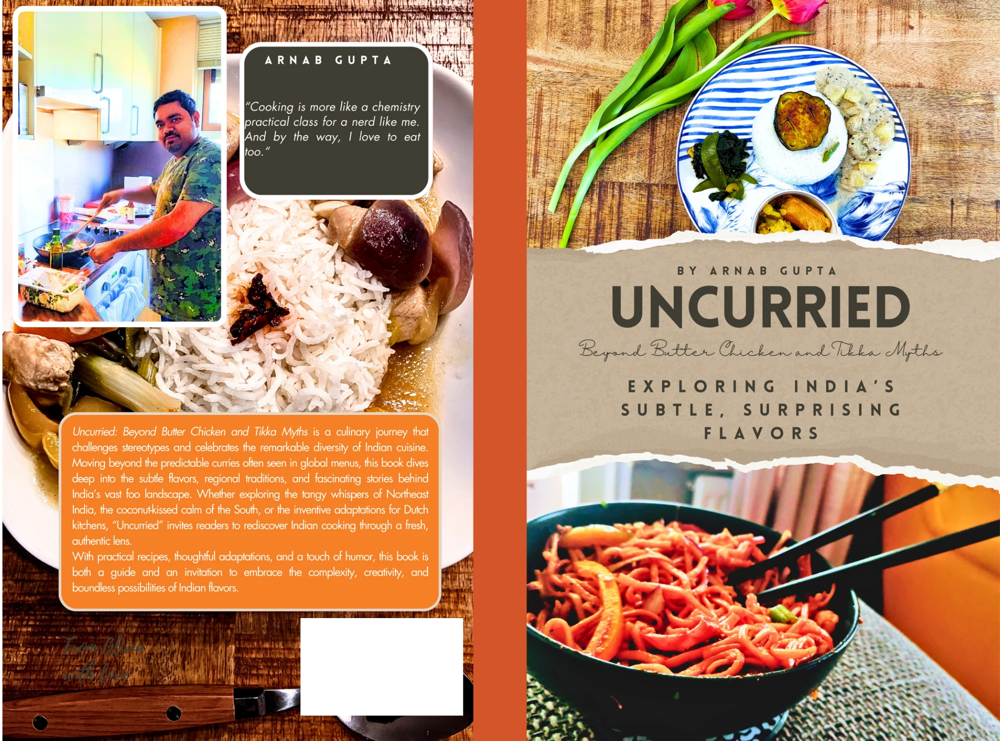
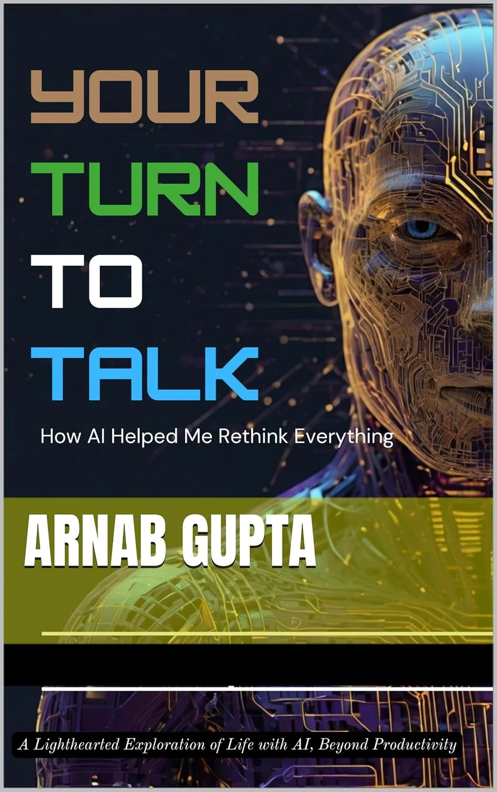

FOOD & CULTURE
Uncurried
Beyond Butter Chicken and Tikka Myths
A treatise exploring India’s subtle, surprising flavours.
Find the Kindle edition ↗INDEPENDENT WRITING. OPEN QUESTIONS.
Books for curious minds, moving between evidence and inheritance, the food we eat and the technologies we live with.
Written by Arnab Gupta
Researcher, author & curious generalist
Wonder without
credulity.
THE BOOKSHELF
01 — 03HISTORY · PHILOSOPHY · SCIENCE
Knowledge, Belief, and the Long Argument over India’s Past
And what happens when one way of explaining the world encounters another? This book follows competing ideas through India’s intellectual history, asking what the evidence can establish and where modern interpretation begins.
Ritual geometry, astronomical calculation, philosophical disagreement, translation and the allure of ancient–modern parallels all enter the story. The past has much to offer without being made to predict the present.
Opens the retailer’s checkout. Availability, prices and delivery vary by country and edition.

FOOD & CULTURE
Beyond Butter Chicken and Tikka Myths
A treatise exploring India’s subtle, surprising flavours.
Find the Kindle edition ↗
TECHNOLOGY & EVERYDAY LIFE
How AI Helped Me Rethink Everything
A lighthearted exploration of life with AI, beyond productivity.
INSIDE THE ARGUMENT
Four ways into Thesis, Antithesis, Synthesis. Open a question and see where the book takes it.
THE DIGITAL SHELF
A home for direct digital editions and downloadable work, alongside the books available through retailers.
The digital shop is being prepared. For now, explore the books through the Amazon links above.
Visit the bookshelf →
ABOUT THE AUTHOR
A researcher by profession.
A curious generalist by inclination.
My professional work centres on agriculture, seed systems and digital innovation. My writing follows a wider set of interests: how we know what we know, what food reveals about culture, and how emerging technologies enter ordinary life.
I value the discipline of evidence and my family’s rich cultural heritage. The questions between them are part of what keeps me writing.
BEFORE YOU CHOOSE
The purchase buttons open Amazon in your selected country. Amazon handles payment, delivery and order support for those purchases. Any Lulu options added here will take you to Lulu’s checkout.
Direct digital editions are in preparation. When they are available, each listing will state the file format, price and delivery arrangements before you pay.
Choose your local Amazon store and check the edition’s product page. Availability and shipping can differ between paperback and Kindle editions and between countries.
No. This is Arnab Gupta’s independent author website. The books and views presented here are personal work.